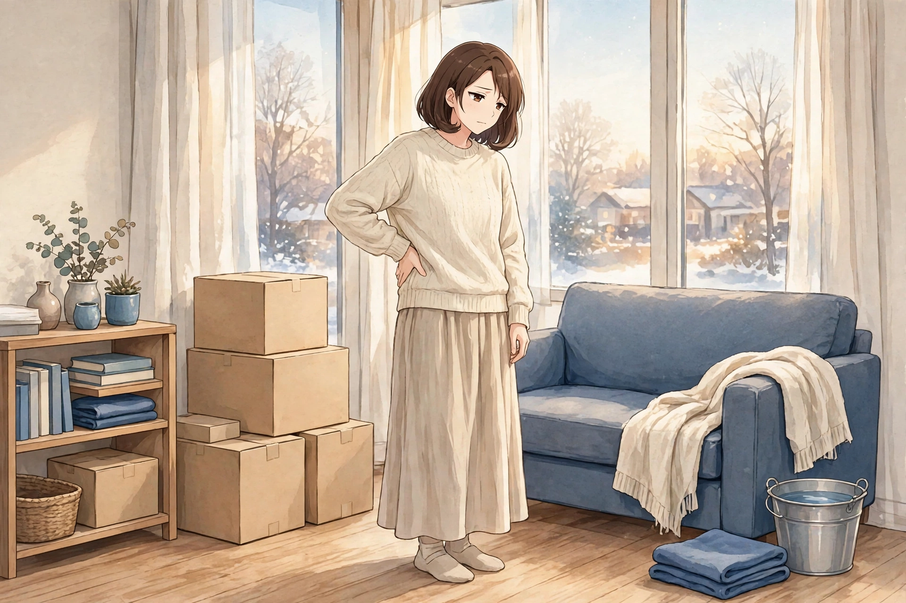

梅田で年末の大掃除の後に気になる腰の重さ｜重い家具を動かした日の過ごし方とセルフケア、受診の目安ハウツー

梅田で働く・暮らす方へ。年末の大掃除で重い家具を動かした日に「ソファや本棚をずらして掃除したあと、腰に重さが残る気がする」「中腰で床や浴室を磨き続けた夜、腰まわりが重だるく感じる」「片付けを終えた翌朝も、腰の重さが抜けきらない気がする」と感じる腰の重さについて、一般的な解説と考えられる要因の整理、重い家具を動かした日の過ごし方とセルフケア、医療機関への受診の目安をまとめました。一般的な健康情報としてお読みください。
#梅田 大掃除 腰の重さ#年末 大掃除 腰 重だるい#重い家具 腰の重さ#腰の重さ セルフケア 大掃除#梅田 女性専用 サロン 腰 年末
大掃除の後に気になる腰の重さとは（一般的な解説）
腰の重さとは、病名ではなく、「腰が重だるい」「立ち上がるときに腰まわりが伸びにくい」「腰に重さがたまったように感じる」と感じる感覚を表す言葉として使われることがあります。ふだんの家事では気にならないのに、年末の大掃除で重い家具を動かしたり片付けに集中したりした日に限って腰の重さを自覚する——そんな訴えは、この時期によく聞かれます。家具の裏側まで掃除しようとソファや本棚をずらす、段ボールを持ち上げて運ぶ、床や浴室を中腰で磨く——大掃除ならではの動きが一日の中に重なることが、ほかの季節の掃除との違いとされます。作業を終えた夕方に気づく方もいれば、翌朝に起き上がろうとして初めて重さを自覚する方もいるとされます。感じ方には個人差が大きく、動かした家具の重さや作業時間、その日の体調によっても変わるとされます。
大切なのは、「ふだんの腰と比べてどうか」「どんな作業のあとに気になりやすいか」という視点です。重い物を持ち上げた日なのか、中腰の姿勢が長かった日なのか、寒い部屋での作業が続いた日なのか——気になりやすい場面を簡単に振り返っておくと、次に家具を動かすときの進め方の備えにもつながります。この記事では、大掃除の後に気になる腰の重さの一般的な解説と、背景として考えられる要因の整理からお伝えします。なお、重さの感じ方だけで体の状態を判断することはできません。気になる変化が続く場合は、後半の「受診の目安」もあわせてご確認ください。
考えられる要因の整理
1つ目は、重い家具を持ち上げる・引っ張る動作の重なりです。家具を持ち上げるときや引きずって動かすときは、腰だけでなく背中やお尻、脚の筋肉も一緒に働くとされます。前かがみの姿勢のまま重い物を持ち上げたり、体をひねりながら荷物を運んだりする動きは、腰まわりへの負担感が重なりやすい場面とされます。無理な姿勢で力を入れる瞬間が何度も重なるほど、その日の夕方や翌日に重だるさを感じやすい、という声も聞かれます。ただし、感じ方には個人差があり、「家具を動かしたことが原因」と決めつけられるものではありません。
2つ目は、中腰や前かがみの姿勢が長く続くことです。床や浴室を磨く、低い棚の中を拭く、家具の裏に手を伸ばす——大掃除には、ふだんの生活ではあまり続かない姿勢が多く含まれます。同じ姿勢を保ち続ける間は、腰まわりや背中の筋肉が支え続ける働き方になり、作業を終えて姿勢を戻したときに重さとして感じられやすいと考えられます。掃除に集中するあまり休憩を挟まずに続けてしまうことも、重なりやすい場面です。ただし、感じ方には個人差があり、「姿勢だけが原因」と一言で決めつけられるものではありません。
3つ目は、冬の寒さや、年末の慌ただしさとの関わりです。年末は冷え込みが厳しく、換気で窓を開けた部屋や、暖房の入りにくい場所での作業では、体が冷えて縮こまりやすくなるとされます。「年内に終わらせたい」という気持ちで予定を詰め込み、気を張ったまま作業を続けることも、無意識のうちに腰まわりへ力が入りやすい一因と考えられます。東洋医学では、腰は生命力の土台とされる「腎（じん）」と関わりが深い部位とされ、背中から腰、脚の後ろ側を流れる膀胱経や、腰を帯のように巡る帯脈のエリアと重ねて考えられてきた歴史があります。要因はひとつではなく、作業の内容や進め方、寒さによって組み合わせが変わるため、思い当たるものをひとつずつ見直すことが大切です。
重い家具を動かした日の過ごし方とセルフケア
まずは「家具を動かす前に、進め方を分けておく」ことです。動かす家具と順番を先に決める、家具の中身を先に出して軽くしてから動かす、引きずらずに毛布や台車などを活用する、一人で持てない重さの物は無理に持ち上げない、といった進め方は、大掃除の中でも取り入れやすい工夫です。持ち上げるときは、腰だけを曲げるのではなく、膝を曲げてしゃがみ、荷物を体に近づけて持つ姿勢が、腰まわりへの負担感を和らげる基本として挙げられます。作業は一度に終えようとせず、範囲を日ごとに分ける、合間に一度手を止めて立つ・歩く区切りを作ることも大切です。痛みを感じるほど無理をする進め方は避けてください。
次に「作業を終えたら、温めて、腰まわりを軽く動かす」ことです。その日の夜は、湯船につかって腰まわりまで温める、蒸しタオルを腰に当てる、といった方法は、冷えてこわばった部位をいたわる基本とされます。立った姿勢で体側をゆっくり伸ばす動きや、腰まわり・股関節まわりを無理のない範囲で動かすストレッチも、作業の合間や終えたあとに取り入れやすいものです。強く倒したり、痛みを感じるほど伸ばしたりする必要はありません。貼るタイプの温熱用品を使う場合は、低温やけどに十分注意し、使い方の表示を確認してください。
あわせて、水分をこまめに取ること、作業した日は夜更かしを控えて眠る時間を確保すること、翌日も重さが残る日は重い作業を重ねないことも、この時期の体調管理の基本とされます。ただし、セルフケアはあくまで日常の重さへの対処です。特定の方法に頼りすぎたり、気になる状態を我慢して様子を見続けたりしないようにしてください。重さが強い日は、ケアよりもまず体を休めることを優先することも大切です。
受診の目安｜こんなときは医療機関へ
大掃除の後の腰の重さの多くは、重い物を持つ動作や中腰の姿勢、寒さといった日常の要素が重なって感じられるとされますが、中には医療機関での確認を優先したいサインもあります。「重い物を持ち上げた瞬間に強い痛みが走り、その後も痛みが続く」「脚のしびれや、力が入りにくい感じを伴う」「安静にしていても強い痛みが続く、痛みが少しずつ強くなっている」「発熱を伴う」「転んだりぶつけたりしたあとから気になり始めた」「排尿や排便のしづらさを伴う」「大掃除が終わって日がたっても、重さや痛みが続く日が増えてきた」「日常生活や仕事、家事に支障が出るほどつらい状態が続いている」といった場合は、セルフケアで様子を見続けず、整形外科など医療機関への受診をおすすめします。年末年始は医療機関の診療日が限られる時期でもあるため、気になるサインがある場合は、早めの時期に相談先を確認しておくことも大切です。
また、腰の重さや痛みの背景には、検査で初めて分かる要素が関係していることもあるため、気になる状態が続く場合は一度相談してみてください。当店のケアはリラクゼーションを目的としたボディケアで、腰の状態や病気を診断したり、それらに対応したりするものではありません。医療機関での確認を優先したうえで、日常のコンディションを整える選択肢のひとつとしてご利用ください。
当店でのケアとサロンのご案内
ステラポラリスは、大阪・梅田エリアのレンタルサロンで施術する女性専用・完全予約制のサロンです。営業は月〜土17:00〜22:00（日曜休み）、施術はオイルマッサージと美容整体、料金は90分10,000円です。ご予約はLINE公式アカウント「ポラリス美容整体院」で受付中です。場所は大阪市北区堂山町12-5 ロイヤルハイツ梅田Ⅱ 303号室（レンタルサロンACE内）、中崎町駅から徒歩5分・阪急梅田駅から徒歩8分です。入室方法の詳細はご予約確定後にLINEでご案内します。
施術では、その日の体調や気になる部位をうかがい、腰・背中からお尻・脚を含めた全身を順にほぐしながら、巡りを意識したケアを組み立てます。美容整体では、姿勢の土台となる骨盤まわりや股関節まわりのケアを組み合わせることもできますので、ご希望があればお伝えください。大掃除で体を動かした日は、静かに休む時間を大切にする進め方も選べますので、遠慮なくお伝えください。担当は施術歴30年・鍼灸師資格を持つセラピスト1名で、当店では鍼灸施術は行いません。関連するお悩みページ「腰の重だるさ」や、関連記事「梅田で雨の日に気になる腰の重さ」「梅田で座りっぱなしの後に気になる腰の重さ」でも、体の見方やケアの考え方を紹介していますので、あわせてご覧ください。料金や営業時間の詳細は、メニュー・料金ページでもご確認いただけます。